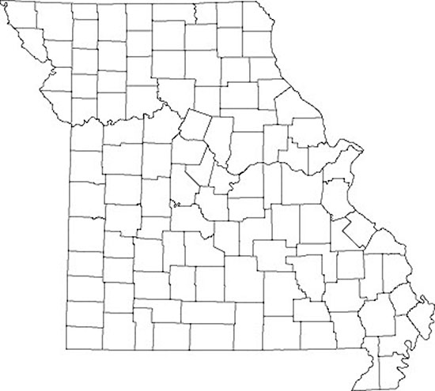
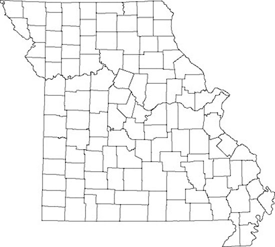

Find us on Twitter
Find us on TwitterMissouri
Click on a county or an area of the map to open a document describing agriculture and weather variability in that state region.
|  |

Click on a county or an area of the map to open a document describing agriculture and weather variability in that state region.
|  |
U.S. climate trends are impacting corn-based cropping systems and threatening agricultural investments. In response, farmers are seeking new ways to ensure continued crop productivity while also minimizing environmental impact.